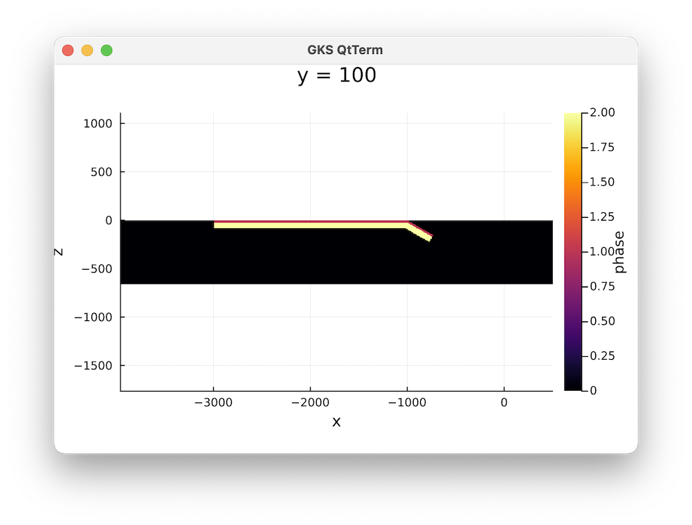
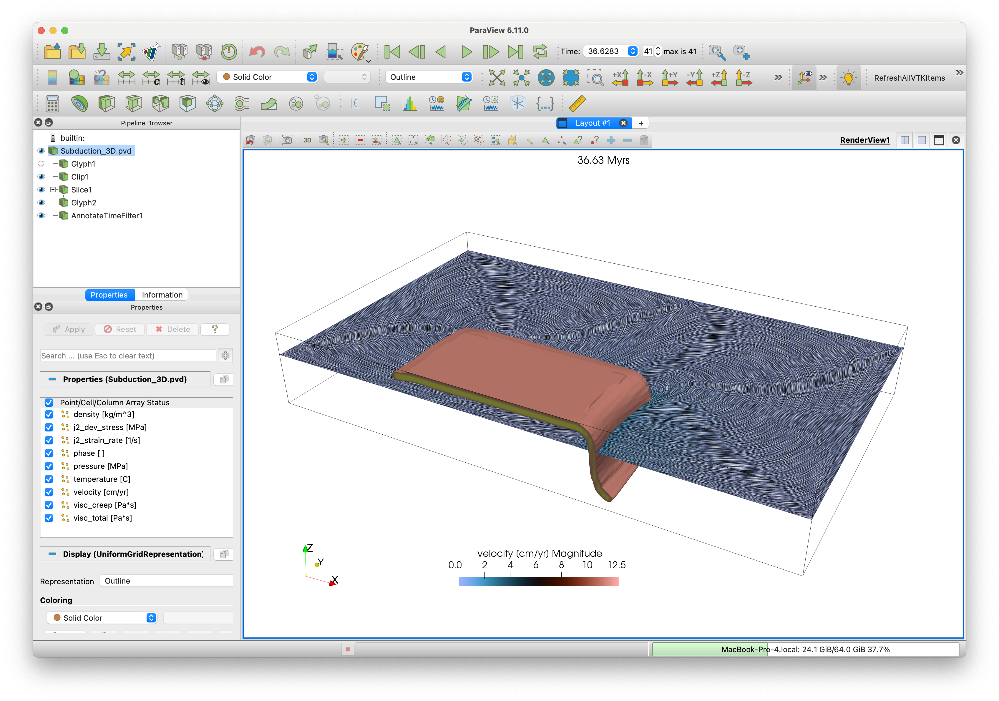

3D Subduction example
This is a 3D subduction example for LaMEM.jl that illustrates how to use the julia interface. This is very similar to the setup described by Schellart and coworkers in a 2007 nature paper in which they demonstrate that toroidal flow changes the slab curvature during subduction as a function of slab width.
1. Generate main model setup
We first load the packages:
using LaMEM, GeophysicalModelGeneratorNext, we generate the main model setup, specifying the resolution and grid dimensions. Note that a range of default values will be set, depending on the parameters you specify.
model = Model(
# Define the grid
Grid(nel=(128,32,64), x=[-3960, 500], y=[0,2640], z=[-660 ,0]),
# No slip lower boundary; the rest is free slip
BoundaryConditions(noslip = [0, 0, 0, 0, 1, 0]),
# We use a multigrid solver with 4 levels:
Solver(SolverType="multigrid", MGLevels=4, MGCoarseSolver="mumps",
PETSc_options=[ "-snes_type ksponly",
"-js_ksp_rtol 1e-3",
"-js_ksp_atol 1e-4",
"-js_ksp_monitor"]),
# Output filename
Output(out_file_name="Subduction_3D", out_dir="Subduction_3D"),
# Timestepping etc
Time(nstep_max=200, nstep_out=5, time_end=100, dt_min=1e-5),
# Scaling:
Scaling(GEO_units(length=1km, stress=1e9Pa) )
)2. Define geometry
Next, we specify the geometry of the model, using the AddBox! function from GeophysicalModelGenerator. We start with the horizontal part of the slab. The function AddBox! allows you to specify a layered lithosphere; here we have a crust and mantle. It also allows specifying a thermal structure. Since the current setup is only mechanical, we don't specify that here.
add_box!(model, xlim=(-3000,-1000), ylim=(0,1000), zlim=(-80,0), phase=LithosphericPhases(Layers=[20,60], Phases=[1,2]))The inclined part of the slab is generate by giving it a dip:
add_box!(model, xlim=(-1000,-810), ylim=(0,1000), zlim=(-80,0), phase=LithosphericPhases(Layers=[20,60], Phases=[1,2]), DipAngle=16)There is a simple way to have a quick look at this setup by using the Plots.jl package:
using Plots
plot_cross_section(model, y=100, field=:phase)Which will give the following plot: 
3. Add material properties:
We can specify material properties by using the Phase function
mantle = Phase(Name="mantle",ID=0,eta=1e21,rho=3200)
crust = Phase(Name="crust", ID=1,eta=1e21,rho=3280)
slab = Phase(Name="slab", ID=2,eta=2e23,rho=3280)and we can add them to the model with:
add_phase!(model, mantle, slab, crust)You can check that this is set with:
modelLaMEM Model setup
|
|-- Scaling : GeoParams.Units.GeoUnits{GEO}
|-- Grid : nel=(128, 32, 64); xϵ(-3960.0, 500.0), yϵ(0.0, 2640.0), zϵ(-660.0, 0.0)
|-- Time : nstep_max=200; nstep_out=5; time_end=100.0; dt=0.05
|-- Boundary conditions : noslip=[0, 0, 0, 0, 1, 0]
|-- Solution parameters : eta_min=1.0e18; eta_max=1.0e25; eta_ref=1.0e20; act_temp_diff=0
|-- Solver options : multigrid solver; coarse grid solver=mumps; 4 levels
|-- Model setup options : Type=files;
|-- Output options : filename=Subduction_3D; pvd=1; avd=0; surf=0
|-- Materials : 3 phases;4. Run the model
on windows MPI + mumps currently does not work
if Sys.iswindows()
model.Solver.MGCoarseSolver = "direct"
endAdd this stage, we are ready to run the simulation. On my machine it takes around 4 seconds per timestep on 8 cores:
try testing == trueif we run this as part of the test suite, use fewer timesteps
run_lamem(model, 8, "-nstep_max 2 -nstep_out 1")
catch
run_lamem(model, 8) # run on 8 cores (if possible)
endThe results looks like this with paraview:  Note that this is a significantly higher resolution than the original paper, which was run on an HPC system (admittedly, this was 20 years ago).
The file Subduction_3D.jl in /scripts reproduces this example
Markdown page generation
#This file was generated using Literate:
#Literate.markdown("Subduction3D.jl","../docs/src/",keepcomments=true, execute=false, codefence = "```julia" => "```")This page was generated using Literate.jl.